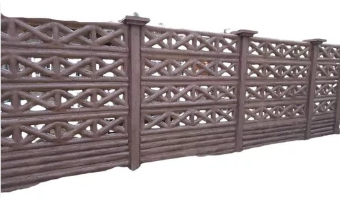

Crear ambientes agradables, ya sea en espacios públicos o particulares, a través de la fabricación e instalación de cercos y muros bulldozer con diseños innovadores de paisajes naturales.
Los cambios de ambiente comienzan por tu decisión de innovación
Misión
Visión

Ser una empresa reconocida por su trabajo creativo y su excelente servicio, que incorpore además diseños innovadores de paisajes naturales en sus productos que generen un entorno agradable dentro de los espacios de recreación.
Valores

Responsabilidad: Con nuestros clientes, trabajadores y entorno natural.
Solidaridad: Es importante en nuestra empresa la buena y sana convivencia de todos los trabajadores.
Compromiso: Con nuestros clientes en cada producto y diseño elaborado.
Confianza: En la calidad de nuestros productos y en el servicio entregado.
Propósito
Mejorar y embellecer el entorno de los espacios públicos o particulares a través de la fabricación e instalación de cercos y muros bulldozer con diseños de paisajes naturales.